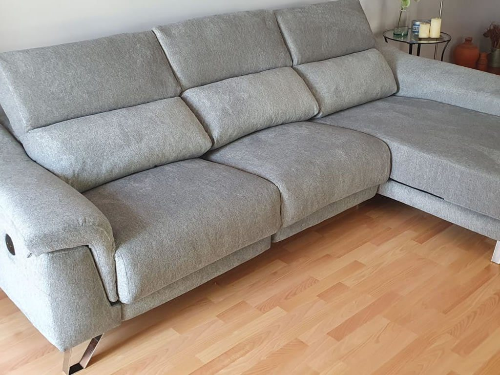
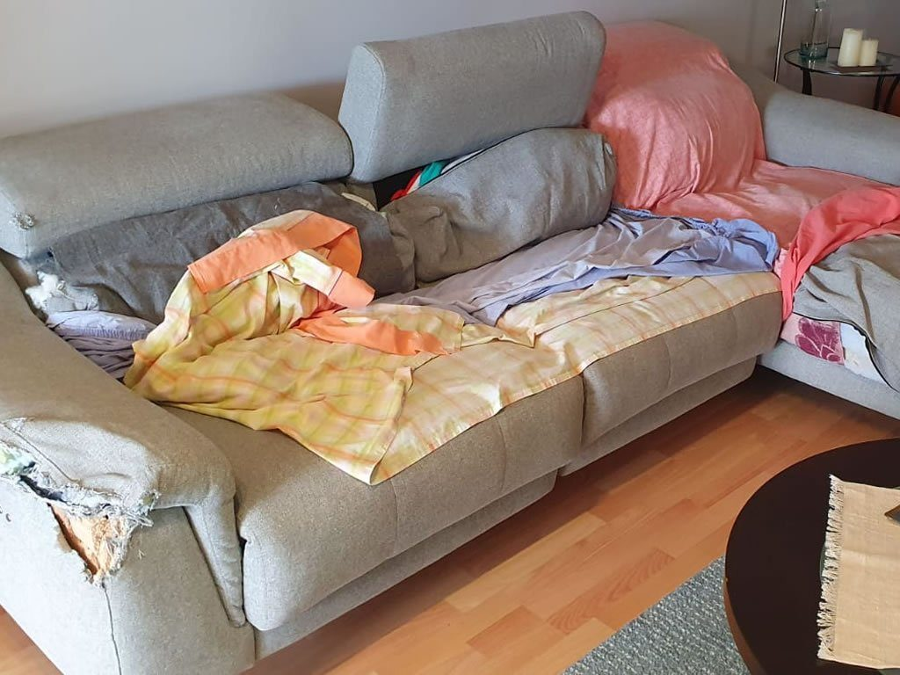
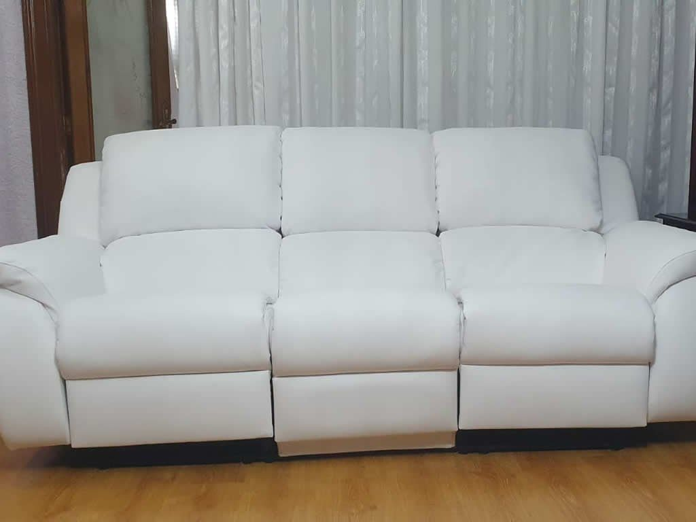
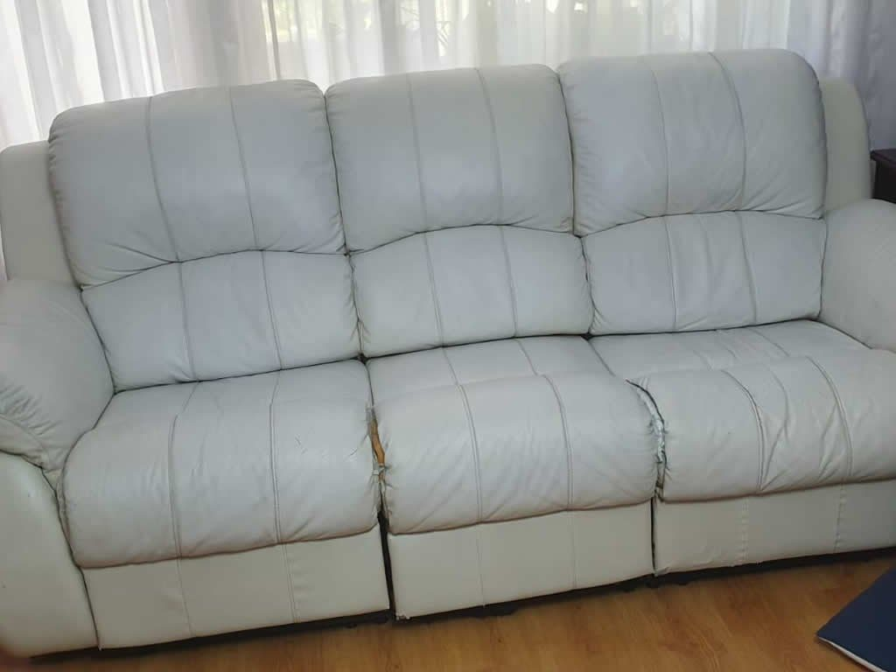
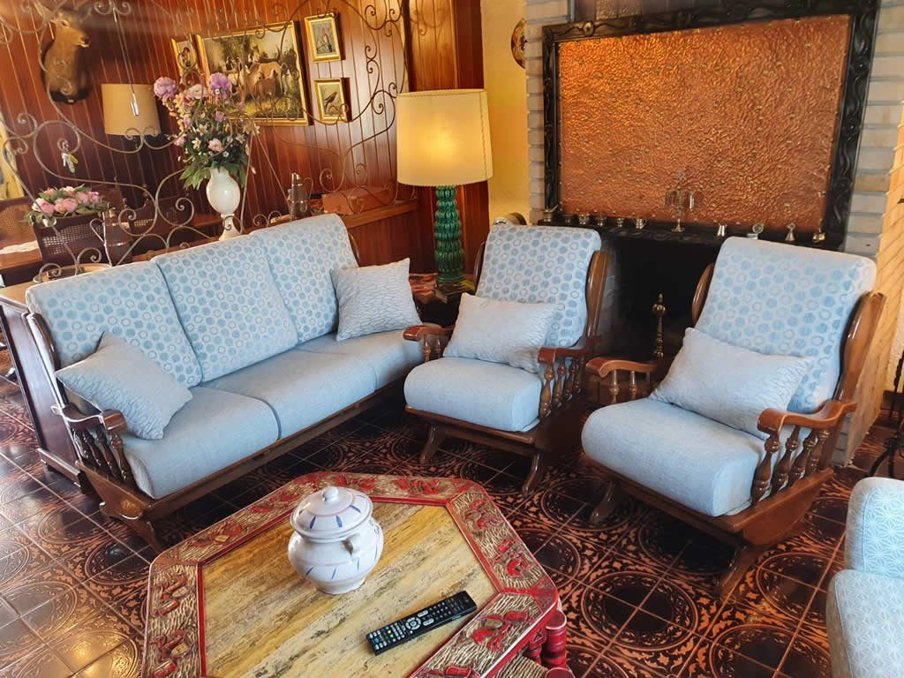
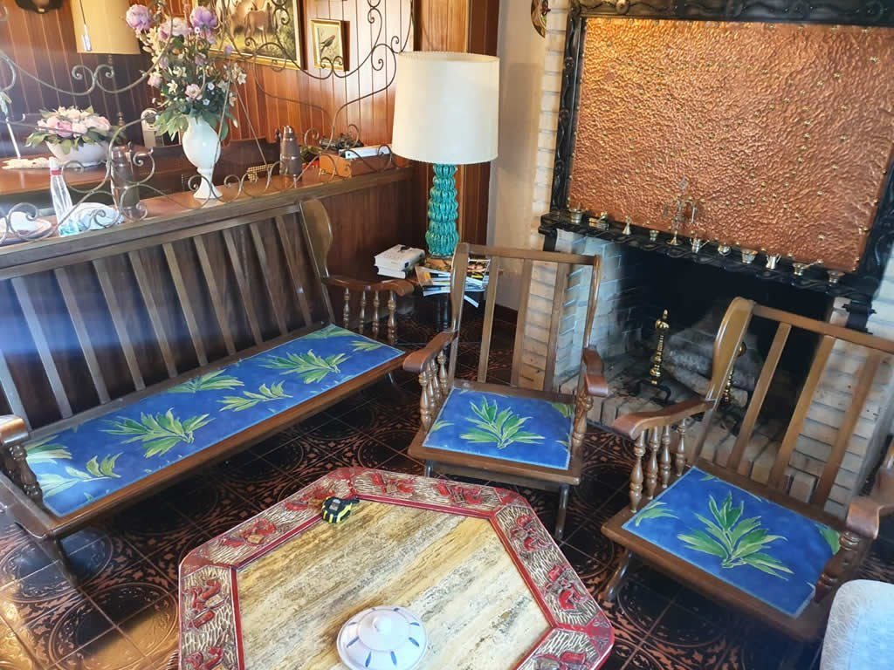
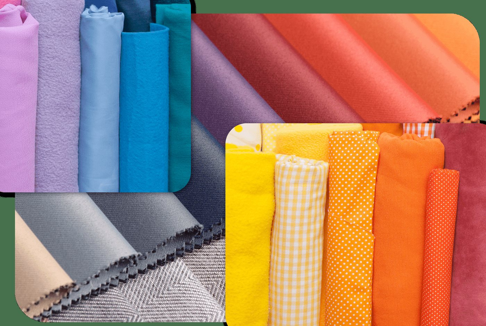

Antes DespuésSofá Chaise Longue · Tapizado completo y nuevas espumas
Tapizar sofá en Zaragoza · Maestros Artesanos
¿Su sofá tiene una buena estructura pero la tela o la espuma se han deteriorado? Retapizarlo con nosotros le permite conservar su calidad original con un diseño moderno, telas antimanchas y el máximo confort.
Todos los estilos y formatos
Sea cual sea la marca, antigüedad o complejidad de su sofá, lo restauramos por completo en nuestro taller.
Renovamos sofás modulares de gran formato. Ajustamos densidades de espuma para garantizar que tanto la chaise como los asientos principales mantengan la misma firmeza.
Expertos en el cosido artesanal de botones capitoné y pliegues tradicionales en rombo. Trabajo minucioso en piel genuina, terciopelo o polipiel de alta gama.
Retapizado respetando con total precisión los mecanismos de apertura y bisagras. Telas resistentes al roce continuo y colchoncillos renovados a medida.
Retapizado integral de tresillos tradicionales, sofás con molduras de madera vista (con opción de barnizado) y confección de faldones o ribetes decorativos.
Resultados reales
Deslice el tirador para comprobar el antes y el después de algunos de los sofás que han pasado por nuestro taller en Zaragoza.


Antes DespuésSofá Chaise Longue · Tapizado completo y nuevas espumas


Antes DespuésSofá de Piel · Restauración completa de estructura y cuero


Antes DespuésSofá de Salón · Cojines a medida y tapicería antimanchas

Los mejores tejidos
Trabajamos con muestrarios de las firmas textiles más prestigiosas para que no tenga que preocuparse por manchas o desgaste.
Envíanos una fotografía de su sofá por WhatsApp o rellene nuestro formulario. Le daremos una valoración sin compromiso y nos desplazaremos a su domicilio en Zaragoza gratis.
Mándenos una foto de su sofá actual.
Llevamos el catálogo de telas a su salón.
Cuidamos cada costura, cincha y espuma.
Se lo devolvemos como nuevo y montado.